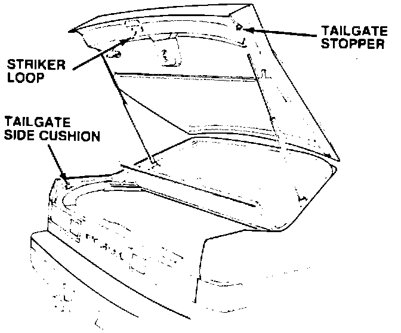
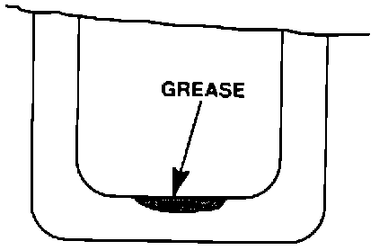
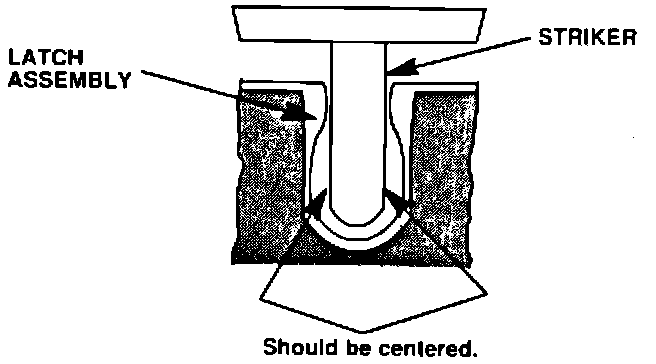
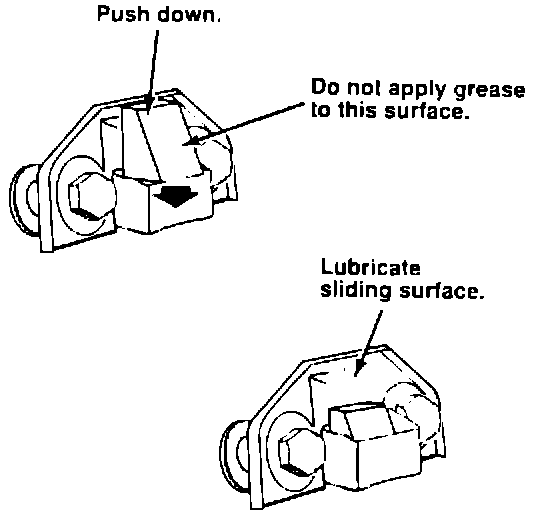

Tailgate Latch - Rattle
January 23, 1989BULLETIN NO. 89-001
YEAR '86-89
MODEL INTEGRA
VIN APPLICATION ALL
Tailgate Latch Rattle
SYMPTOM
A rattle or clunk from the tailgate area.
CORRECTIVE ACTION

Check the positioning and operation of the tailgate latch and cushions, adjust if necessary.

1. Clean any dirt and grease off the striker loop and examine the loop for evidence of contact with the metal part of the latch assembly. If properly adjusted, the loop should ride against the plastic pads in the latch assembly and show little or no wear. If metal-tometal contact is suspected, remove the rear trim panel for access to the latch assembly. Otherwise, apply a small dab of multipurpose grease to the striker loop and go to step 3.

2. Lie in the cargo area and have an assistant close the tailgate. Check the position of the striker loop in the latch mechanism. If it is not centered, adjust the latch. If the range of latch adjustment is ncit sufficient, the striker loop may also be loosened and adjusted. After completing the adjustment, apply a small dab of multipurpose grease to the striker loop as shown in step 1.

3. Push the rubber pad on each tailgate side cushion downward and apply a coating of multipurpose grease to the plate. Do not apply any grease to the part of the cushion that contacts the tailgate.
4. Check the adjustment of the tailgate stoppers by placing a piece of paper between each stopper and the body and fully closing the tailgate. You should not be able to remove the paper without tearing it. If this is not the case, adjust the stopper.
PARTS INFORMATION
None
WARRANTY INFORMATION
Operation Number: 839020
Flat Rate Time: 0.4 hour
Failed Part No.: 83309-SB2-661ZL
Defect Code: 043
Contention Code: B07